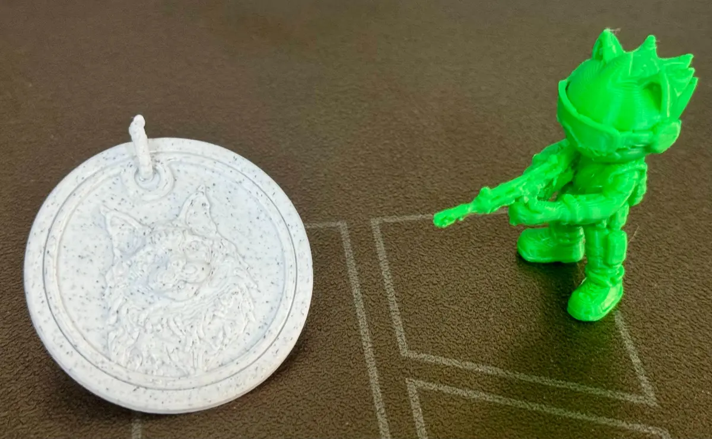
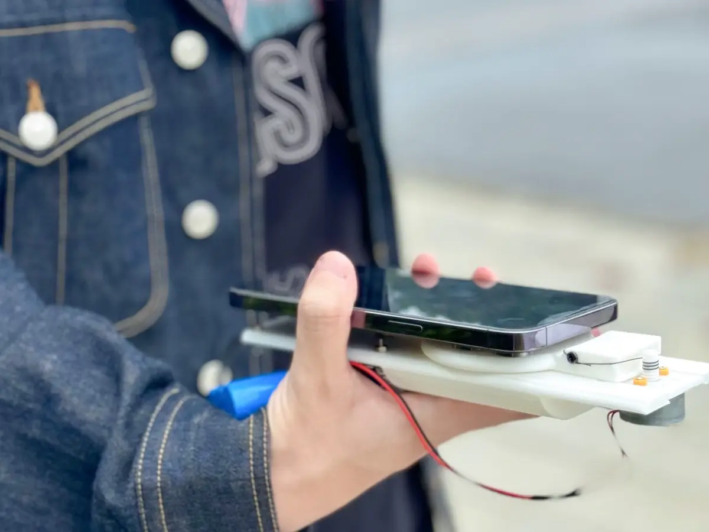

Z. Pan, D. Liu, K. Wang, X. Yin, H. Wen, C. Lin. 2026. Spatiality Decoder: Toward Unity and Ubiquity for Inhabiting Spatialized Photographic Media in Mixed Reality. Accepted: VRST 2026 Posters.
Z. Pan, D. Liu, K. Wang, X. Yin, H. Wen, C. Lin. 2026. Spatiality Decoder: Toward Unity and Ubiquity for Inhabiting Spatialized Photographic Media in Mixed Reality. Accepted: VRST 2026 Posters.

Z. Pan*, D. Liu*, C. Lin, H. Shen, Z. Wei, B. Zhang, Z. Jiang, G. Shen, S. Tang. 2026. Personal 3D Printing without Visual Dependency in the Generative AI Era: Opportunities and Challenges. In Designing Interactive Systems Conference (DIS '26 Companion), June 13-17, 2026, Singapore, Singapore.
*Equal contribution


Z. Pan. 2025. mARker: Hybrid-Interfaced Spatial Sketching via iPad AR, Apple Pencil, and an Instantly Crafted Tracker. In Proceedings of the 2025 IEEE International Symposium on Mixed and Augmented Reality Adjunct (ISMAR '25-Adjunct), October 8-12, 2025, Daejeon, Korea, Republic of.

